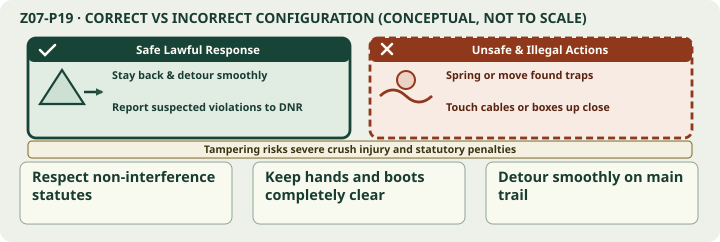

Z07-P19 · Traps and snares · New manuscript
Non-Tampering Laws and Safe Distance Around Lawful Equipment
Prevent both personal injury and criminal trap-interference violations when encountering lawfully placed seasonal gear.
When it applies · Encountering tagged seasonal equipment on open public lands where trapping is lawful.
Equipment · None—observe from distance and move on.

Actions
- Understand that Minnesota law prohibits intentionally tampering with, springing, damaging, or stealing lawfully placed traps or snares.[L01, L09]
- Avoid approaching or touching suspected equipment both to comply with statute and to prevent severe crush injuries from stored spring energy.[L09, L11]
- Continue safely along the trail, keep companions and leashed pets clear, and contact MN DNR only if you suspect the set is unlawful, unmarked, or placed in a closed park.[L07, L09]
Failure recognition · Springing a lawful trap with a stick risks broken fingers, eye trauma from flying debris, and misdemeanor wildlife-interference charges.[L09, L11]
Verify · Suspected lawful gear is left untouched while the party moves safely out of the immediate corridor.[L09]
Stop or change course · Stop and step back immediately rather than inspecting tags up close; report concerns from a safe distance.[L09, L11]
Evidence and editorial notes
- L01 · Minnesota DNR · Minnesota Trapping Regulations and Fur Harvest Rules (Current web edition)
- Section: Minnesota trapping licensing, seasons, and statutory limits · Conditions: Any regulated trapping activity or legal reference in Minnesota
Support: Trapping is strictly regulated by license, season, species, trap type, set location, check intervals, and landowner permission; unauthorized trapping is illegal.
Limitations: Emergency narratives never create an exemption to set traps or snares; verify current statute and DNR handbook every season. · Conflicting evidence: None noted.
Editorial note: Primary Z07 legal boundary. · Specialist reviewer: Wildlife law and DNR enforcement reviewer
Primary source · checked 2026-11-25 - L07 · Minnesota DNR · Minnesota State Park Rules and Resource Collecting Restrictions (Current web edition)
- Section: Public park, trail, and recreation-area trapping prohibitions · Conditions: Minnesota State Parks, campgrounds, and restricted public trails
Support: Trapping is generally prohibited in Minnesota State Parks, SNAs, and designated high-use public recreation corridors.
Limitations: Public multiple-use forests and WMAs may permit lawful seasonal trapping; leash pets and check posted notices. · Conflicting evidence: None noted.
Editorial note: Clarifies where bystanders/pets may encounter lawful sets. · Specialist reviewer: Public-lands manager
Primary source · checked 2026-11-25 - L09 · Minnesota DNR · Turn In Poachers (TIP) and Conservation Officer Reporting (Current web edition)
- Section: Reporting illegal, unmarked, or abandoned traps and snares · Conditions: Encountering suspected unlawful, out-of-season, or unsafe sets
Support: Do not touch, spring, or steal equipment; photograph from a safe distance with location coordinates and report to MN DNR TIP or local law enforcement.
Limitations: Tampering with lawful traps can be illegal and risks severe hand injury from stored spring energy. · Conflicting evidence: None noted.
Editorial note: Protects bystanders from injury and legal liability. · Specialist reviewer: Conservation enforcement reviewer
Primary source · checked 2026-11-25 - L11 · Association of Fish & Wildlife Agencies · Best Management Practices for Trapping and Furbearer Welfare (Current web edition)
- Section: Conceptual classification of historic vs regulated capture categories · Conditions: Educational overview of mechanical hazard types without construction specs
Support: Historical and regulated devices fall into restraining (foothold, cage, cable restraint) and killing (body-grip) hazard classes with distinct spring-energy risks.
Limitations: Conceptual awareness supports hazard recognition only and must never include trigger dimensions, wire specs, or placement instructions. · Conflicting evidence: None noted.
Editorial note: Enforces Z07 no-actionable-construction editorial boundary. · Specialist reviewer: Safety and wildlife ethics reviewer
Primary source · checked 2026-11-25
Source lineage · New manuscript (Z07 P18 legal and safety) · Classification · New manuscript.